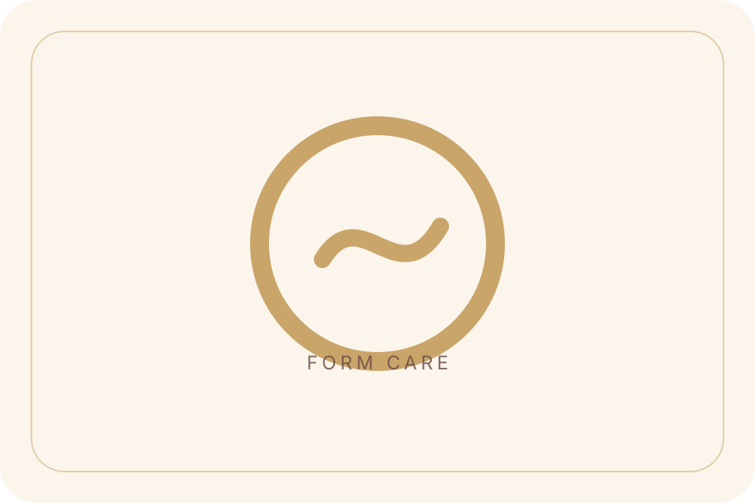
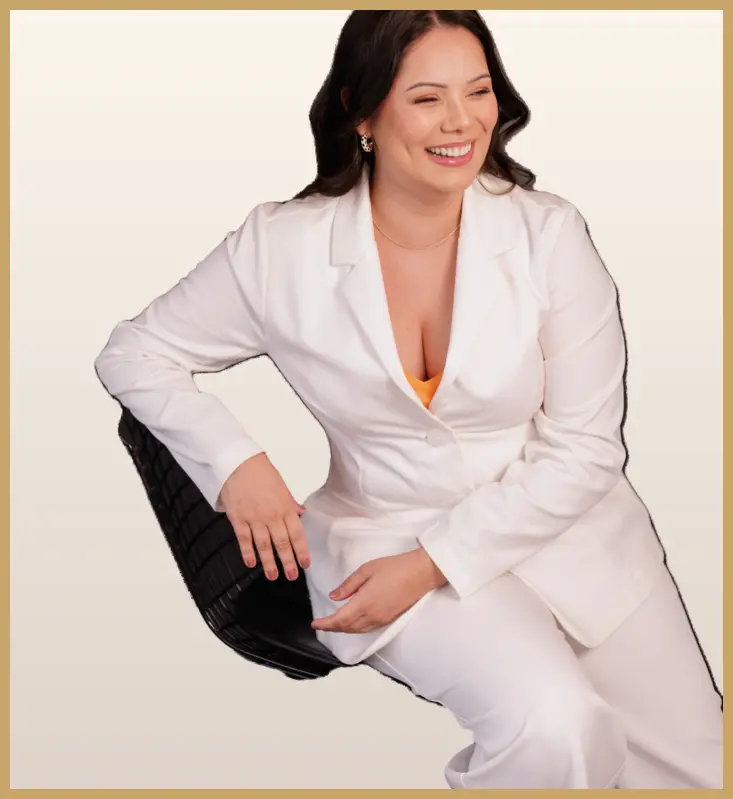
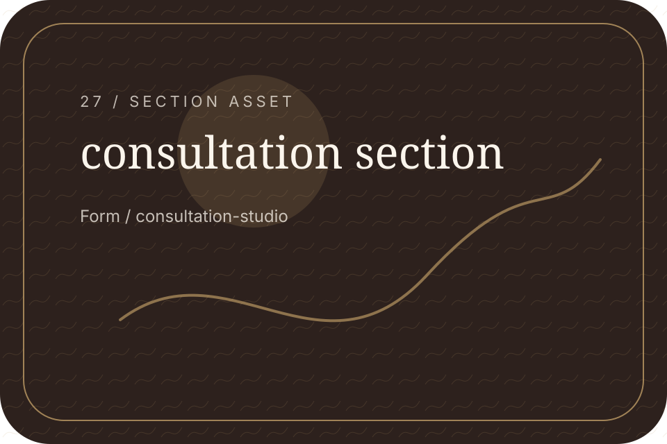
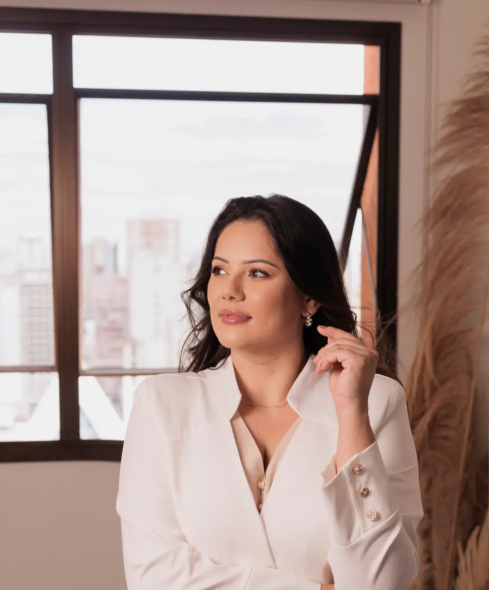
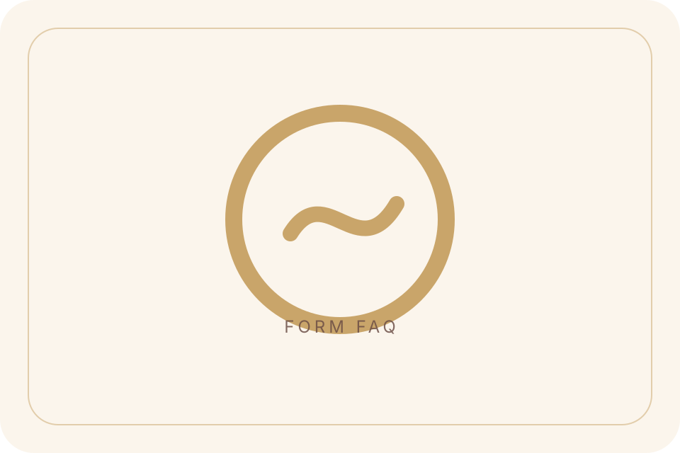
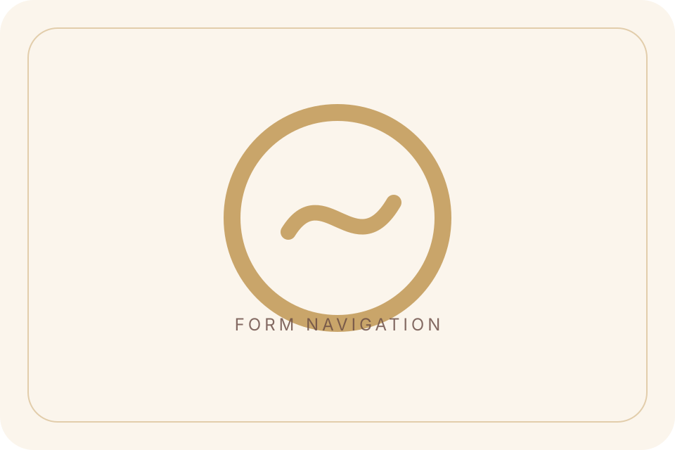
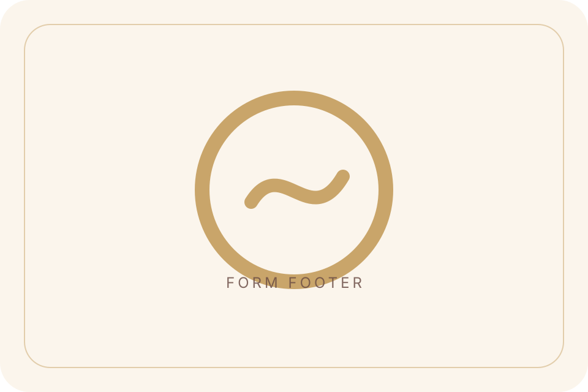
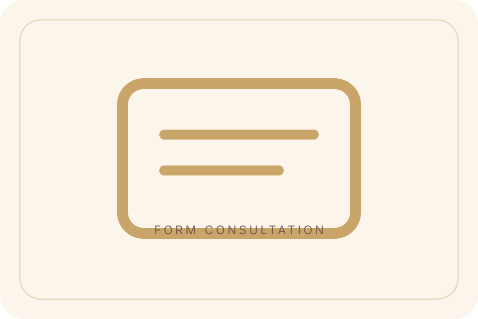

Goals
Personal direction.
Form / Consultation Hero
Start with a calm conversation about your goals, questions, comfort, and expectations.
Form / During Conversation
The conversation focuses on listening, understanding, and guiding your next step clearly.

Form / After Consultation
You should leave with clearer options, realistic expectations, and a better sense of direction.

Form / Form Break
Use the form or WhatsApp to begin privately.
Form / Privacy Comfort
Your message should feel safe, clear, and handled with care.
Form / Related Guidance
Explore care guidance or practical questions before sending your request.
Form / Contact Options
Use WhatsApp or the contact page if you have a quick question.

Form / What It Clarifies
A consultation can clarify goals, questions, comfort, and expectations.

Personal direction.

Ask calmly.

Respect limits.

Plan responsibly.

Form / Before Consultation
Bring simple notes about your goals, routine, questions, and comfort level.
Form / Final CTA
A clear first step can make the whole process easier.